1805 · Cádiz
La partición: dos hijuelas

«Partición convencional de los bienes quedados por muerte del Sr. D. Sebastián Martínez, Thesorero General que fue del Reyno, hecha entre sus dos hijas y herederas D.ª Josefa y D.ª Catalina Martínez», portada. Archivo Histórico de Protocolos de Cádiz.
Cinco años después de la muerte de Sebastián, sus dos hijas se reparten la pinacoteca en lotes de valor equivalente. Josefa, casada con Fernando Casado de Torres, y Catalina, casada con Francisco Viola.
1828 · Madrid
El inventario de Fernando Casado

«Catálogo y tasación de la pinacoteca de… Fernando Casado de Torres», portada. Biblioteca Nacional de España, Mss/18630/40.
El marino e ingeniero recompone la colección. Recupera buena parte de lo que había recibido Catalina y la amplía hasta casi mil obras.
1844-1849 · Madrid
El avalúo de la Academia y las ofertas a Isabel II

«Inventario y tasación de los cuadros que formaban la colección de don Celestino García Luz», carpetilla. Real Academia de Bellas Artes de San Fernando, Archivo, sign. 1-36-6.
Celestino García Luz, yerno de Casado, ofrece la colección a la Corona en 1844, 1847 y 1849. La Academia de San Fernando la tasa. La reina no compra.
27 de junio de 1867 · París
La venta del conde del Retamoso en el Hôtel Drouot

Catálogo de la venta de la galería de M. P. Muñoz, conde del Retamoso, Hôtel Drouot, 27 de junio de 1867, con anotaciones de precios a mano. Lugt 29905 (Brill, Art Sales Catalogues Online).
El mismo año en que el marqués de Salamanca vende su galería en París, los herederos lo intentan con 51 lotes. El resultado es pobre.
1885-1888 · Madrid
La partición de Josefa García-Luz

Testamentaría de Josefa García-Luz Casado, condesa del Retamoso, 1885: el legajo abierto. Archivo Histórico de Protocolos de Madrid, t. 28102.
Muere Josefa en 1885 y la partición se cierra en 1888. Es el inventario que deja ver lo que no se vendió en París, y en él aparece el Goya de Sebastián, tasado en 375 pesetas.
13 de mayo de 1937 · Tarancón
El acta de la Junta de Incautación

Junta Central del Tesoro Artístico, Junta Delegada de Cuenca: acta n.º 1, Tarancón, 13 de mayo de 1937.
Diez meses después del asesinato de la condesa viuda del Retamoso, la Junta registra lo que queda en el palacio de Tarancón. Entre los cuadros, el retrato de Sebastián por Inza, «rasgado en el centro».
Seis documentos, siete inventarios
Crecer, recomponerse, deshacerse

Obras o asientos inventariados. En 1805 y 1888 se cuentan asientos, y un asiento puede agrupar varios cuadros. El avalúo de 1844 cubre la colección de Celestino García Luz.
Resultado 3
París no compró
Al menos 23 de los 51 lotes de Drouot, y 18 de los 19 Murillos, vuelven a aparecer en la partición de 1888.

Cruce del catálogo de Drouot (1867) con la partición de 1888.
Los seis cuadros de la conferencia, y uno más
Siete trayectorias

Azul: familia de Sebastián y herederos. Naranja: mercado y colecciones europeas. Verde: Estados Unidos y Argentina. Gris: sin datos.
Lámina 1 · Lo cuenta Lesley
Goya, Sebastián Martínez, 1792

The Metropolitan Museum of Art, Nueva York (06.289) · óleo sobre lienzo, c. 93 × 68 cm
Firmado «D. Sebastián Martínez por su amigo Goya, 1792». El único de los seis que sale de España por cuenta de la familia.
- 1792Cádiz, casa de Sebastián
- 1805Hijuela de Catalina, 750 rs
- c. 1814Lo recompran Josefa y Fernando Casado
- 1828Inventario de Casado, 1.500 rs
- 1888Partición de Josefa García-Luz, 375 ptas
- ?-1904Logroño, la rama riojana
- 1904Salcedo e hijo, Madrid, 14.000 ptas
- 1905Knoedler, Londres
- 1906Metropolitan Museum, 1.700 libras, Fondo Rogers
En los originales · Goya, Sebastián Martínez (1792). Metropolitan Museum of Art
El mismo cuadro en tres papeles de la familia
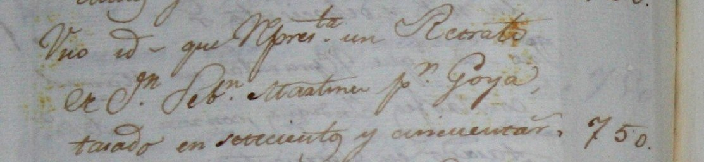
«Uno id. que repres.ta un Retrato de D.n Seb.n Martínez p.r Goya, tasado en setecientos y cincuenta r.»
AHPNC, leg. 5387, f. 1312
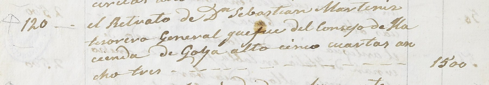
«el Retrato de D.n Sebastián Martínez tesorero General que fue del Consejo de Hacienda, de Goya, alto cinco cuartas, ancho tres»
BNE, Mss/18630/40
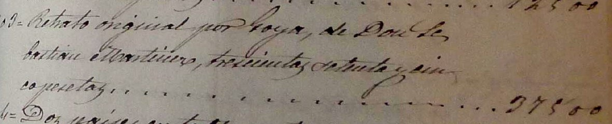
«Retrato original por Goya, de Don Sebastián Martínez, trescientas setenta y cinco pesetas»
Partición de 1888
Lámina 2 · Lo cuenta Lesley
Alonso Cano, Retrato de un eclesiástico, 1625-1628

Hispanic Society of America, Nueva York · óleo sobre lienzo, 103 × 79 cm
Inquisidor, sacerdote, eclesiástico: un cuadro y tres nombres. Rechazado por la Academia en Madrid en 1844, colgado hoy en Nueva York.
- s. XVIIAlmirante de Castilla
- c. 1790Sebastián Martínez, Cádiz
- 1805Hijuela de Catalina, «hombre con golilla», 180 rs
- 1828Casado, «un Inquisidor» de Alonso Cano, 3.000 rs
- 1844La Academia lo rebaja: «sacerdote», escuela de Cano
- c. 1850Henry Danby Seymour, Londres
- 1920Daniel Farr, subasta Seymour
- 1932Hispanic Society, donación de Huntington
En los originales · Alonso Cano, Retrato de un eclesiástico. Hispanic Society
Hombre con golilla, Inquisidor, sacerdote
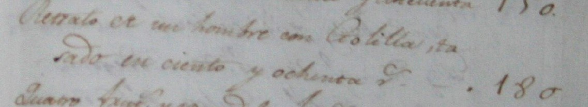
«Retrato de un hombre con golilla, tasado en ciento y ochenta r.»
AHPNC, leg. 5387, f. 1306r
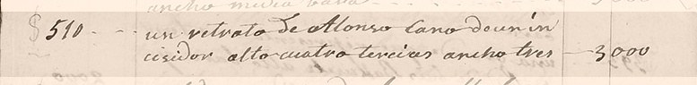
«un retrato de Alonso Cano de un Inquisidor alto cuatro tercias ancho tres»
BNE, Mss/18630/40 · foto L. Crewdson
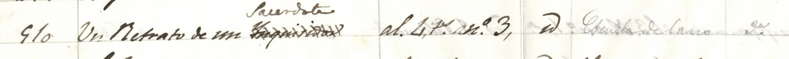
«Inquisidor» tachado; encima, «Sacerdote». «Escuela de Cano»
RABASF, 1-36-6 · foto L. Crewdson
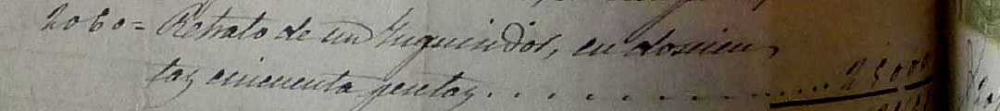
«Retrato de un Inquisidor, en doscientas cincuenta pesetas». ¿Una copia? El original estaba en Londres hacia 1850
Partición de 1888
Lámina 3 · Lo cuenta Lesley
Murillo, boceto de Los desposorios místicos de Santa Catalina, c. 1680-1682

Los Angeles County Museum of Art (M.83.168) · óleo sobre lienzo, 71 × 52 cm
El boceto del retablo de los Capuchinos de Cádiz. Siete libras en Londres en 1817; 209.000 dólares en Nueva York en 1983.
- 1772Marqués de la Cañada, El Puerto; lo ve Richard Twiss
- 1785-1800Sebastián Martínez; lo ve Ponz
- 1805Hijuela de Josefa, 900 rs
- 1812Manuel de Llera lo vende al capitán Davies, Londres
- 1817Christie's, lote 27: 7 libras
- s. XIXPaíses Bajos
- c. 1900Irving M. Scott, San Francisco
- 1983Sotheby's, Nueva York: 209.000 $; Colnaghi; LACMA
En los originales · Murillo, boceto de Los desposorios místicos de Santa Catalina. LACMA
Un solo asiento: en 1812 ya estaba en Londres
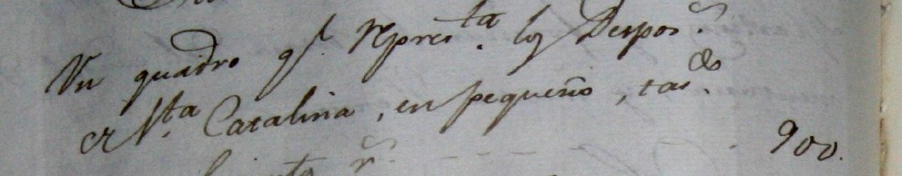
«Un quadro q.e repres.ta los Despos.s de S.ta Catalina, en pequeño, tas.do en novecientos r.»
AHPNC, leg. 5387, f. 1236
Lámina 4 · Lo cuenta José Juan
Joaquín Inza, Retrato de un caballero español: Sebastián Martínez, c. 1776

Colección particular · 98 × 72,8 cm según Sotheby's (2004)
Sebastián a los 29 años, recién casado, con su escribanía de plata. Y una medida que no cuadra: 63 × 42 cm en 1828, 67 × 50 en 1937, 98 × 73 en 2004.
- 1776Encargo en Madrid
- 1805Hijuela de Josefa, 120 rs
- 1828Casado, 100 rs, «tres cuartas por media vara»
- 1888Partición de Josefa García-Luz, 40 ptas
- 1937Tarancón: la Junta lo recoge «rasgado en el centro»
- 1939-Lo recupera el V conde del Retamoso
- 1966Berry-Hill Galleries, Nueva York
- 2004Sotheby's, Nueva York, lote 53
En los originales · Joaquín Inza, Retrato de un caballero español: Sebastián Martínez
Cuatro asientos y una medida que no cuadra
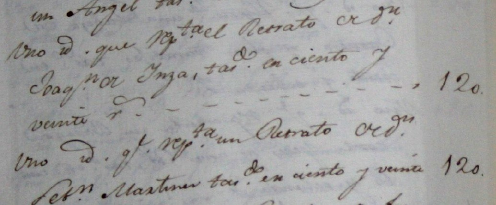
«el Retrato de D.n Joaq.n de Inza», 120 rs; y a continuación «un Retrato de D.n Seb.n Martínez», 120 rs
AHPNC, leg. 5387, f. 1239
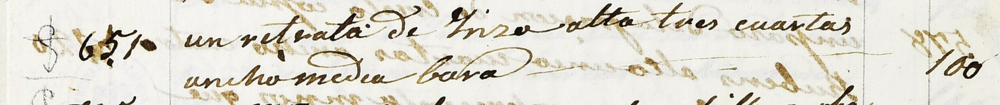
«un retrato de Inza alto tres cuartas ancho media bara» (unos 63 × 42 cm)
BNE, Mss/18630/40
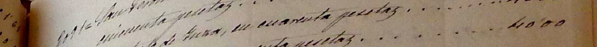
«[Un re]trato de Inza, en cuarenta pesetas»
Partición de 1888
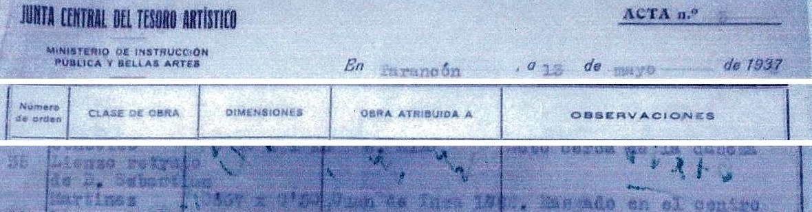
«Lienzo retrato de D. Sebastián Martínez», 0,67 × 0,50, «Juan de Inza», «rasgado en el centro»
Junta Delegada de Incautación, Cuenca
Lámina 5 · Lo cuenta José Juan
Velázquez, Santa Rufina, 1629-1632

Fundación Focus, Sevilla · óleo sobre lienzo
Santa Justa en Cádiz, Murillo en Londres, Velázquez en Nueva York. En 1999 España perdió la puja; en 2007 volvió a Sevilla.
- s. XVIILuis de Haro, marqués del Carpio
- s. XVIIICasa de Alba
- c. 1796Sebastián Martínez
- 1805Hijuela de Catalina, «una Santa Justa», 1.500 rs
- 1867Venta Salamanca, París: Dudley, como Murillo
- 1948Parke-Bernet, Nueva York, ya como Velázquez; Buenos Aires
- 1999Christie's, Nueva York
- 2007Sotheby's, Londres: 8,42 M£; Focus
En los originales · Velázquez (?), Santa Rufina. Fundación Focus
Santa Justa en Cádiz, Murillo en Londres, Velázquez en Nueva York
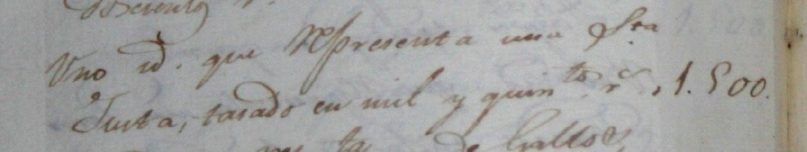
«Uno id. que representa una S.ta Justa, tasado en mil y quin.tos r.»
AHPNC, leg. 5387, f. 1317
Lámina 6 · Lo cuenta José Juan
Goya, Mujer joven con abanico, c. 1806-1807

Musée du Louvre, París (RF 1132) · óleo sobre lienzo, 103 × 84,5 cm
¿Catalina Martínez, la hija de Sebastián? El único cuadro de la familia que nunca fue suyo y el único de los seis que no terminó en América.
- 1806-1807Encargo de Catalina y Viola, que no lo pagan
- 1828Taller de Goya: «doña Catalina Viola» (Brugada)
- s. XIXMarqués de Salamanca
- Alphonse Oudry, París; Édouard Kums, Amberes
- 1898Musée du Louvre
Coda · Lesley y José Juan
La Resurrección, atribuida a Solimena

En venta: Templum, Madrid (2025-2026); hoy en 1stDibs, Nueva York · c. 12.000 €
Está en todos nuestros inventarios. Doscientos veinte años después de la partición, un cuadro de Sebastián sigue a la venta en el mercado americano.
- 1805Hijuela de Catalina, «borrón», 1.500 rs
- 1828Casado, «del Trebisani», 2.000 rs
- 1888Partición, 625 ptas
- 1937Tarancón, «s. XVII», «sin marco»
- 2025Templum, Madrid, «Escuela italiana»
- 20261stDibs, Nueva York
En los originales · Coda. La Resurrección, hoy atribuida a Solimena
De Trevisani a Solimena sin cambiar de pared
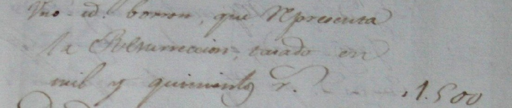
«Uno id. borrón, que representa la Resurrección, tasado en mil y quinientos r.»
AHPNC, leg. 5387, f. 1316
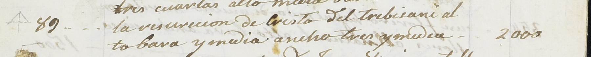
«la resurrección de Cristo del Trebisani, alto vara y media, ancho tres y media»
BNE, Mss/18630/40
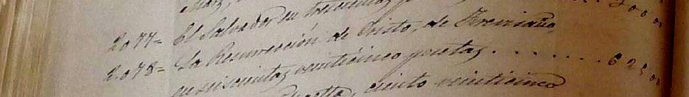
«La Resurrección de Cristo, de Trevisani, en seiscientas veinticinco pesetas»
Partición de 1888
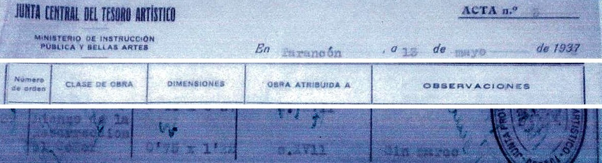
«Lienzo de la Resurrección», 0,75 × 1,32, «s. XVII», «sin marco»
Junta Delegada de Incautación, Cuenca